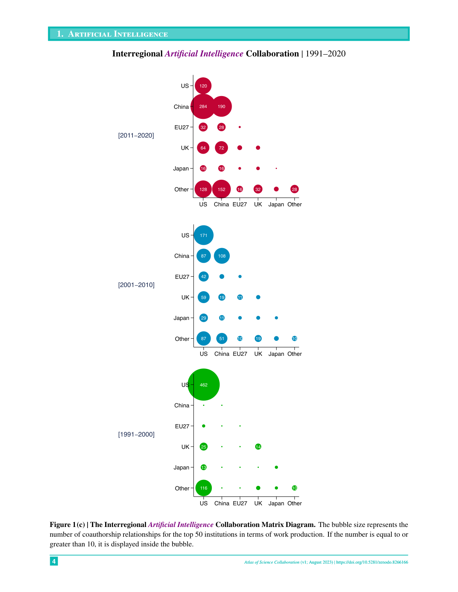
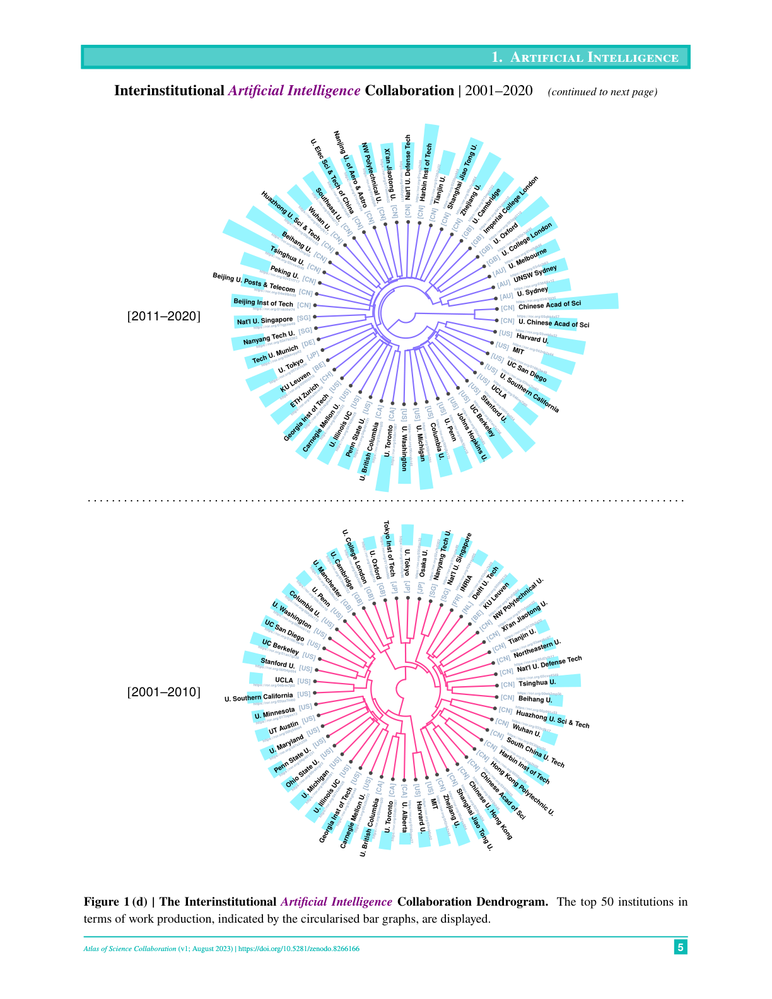

Figure 1
저자: Keisuke Okamura | 날짜: 2024-06-11 | Journal: SN Computer Science | DOI: 10.1007/s42979-024-02973-4
Figure 1
1971년부터 2020년까지 50년간 15개 자연과학 분야의 기관 간(interinstitutional) 및 국제(international) 연구 협업 패턴을 OpenAlex 데이터를 활용하여 세계 지도, 매트릭스 다이어그램, 덴드로그램 등으로 시각화한 아틀라스(atlas)이다. 전 분야에 걸쳐 "축소하는 세계(Shrinking World)" 현상이 확인되었으며 -- 과학 산출은 폭발적으로 증가하면서도 기관 간 협력 거리는 지속적으로 감소했다. 과학기술 정책입안자, 외교관, 기관 연구자를 위한 글로벌 협업 현황의 직관적 참조 자료를 제공한다.

Figure 2

Figure 3

Figure 4

Figure 5
총평: 50년간 15개 과학 분야의 글로벌 협업 패턴을 일관된 방법론으로 시각화한 유용한 참조 자료이나, 분석적 깊이보다는 기술적(descriptive) 시각화에 치중되어 있어 학술 논문으로서의 기여보다는 정책 참고자료로서의 가치가 더 크다.
Figure 1: AI 분야 국제 협업 세계 지도 (1971-2020). 시기별로 협업 네트워크가 미국 중심에서 미국-중국-유럽 다극 체제로 변화하는 모습이 뚜렷하다.
Figure 2: 양자과학 분야 국제 협업 세계 지도 (1971-2020). 유럽과 미국 간 연결이 강하며, 아시아 허브가 점차 성장하고 있다.
Figure 3: 생명공학 분야 국제 협업 세계 지도 (1971-2020). 미국-유럽 축이 가장 강하며, 중국이 2011-2020에 급부상했다.
Figure 4: AI 분야 지역 간 협업 매트릭스 (1991-2020). 버블 크기가 공저 관계 수를 나타내며, 미국-중국 간 협업이 2011-2020에 폭발적으로 증가했다.
Figure 5: AI 분야 기관 간 협업 덴드로그램 (2001-2020). 중국 기관들이 독자적 클러스터를 형성하며 미국-유럽 클러스터와 구분되는 양상을 보인다.